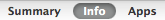
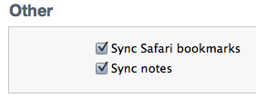

The bookmarklet is the easiest way to open webpages in LazyEye.
When using Mobile Safari, tapping the bookmarklet will open the current webpage in LazyEye. No need to copy the URL, just one tap.
There are two ways to install the LazyEye bookmarklet:
Installation From iPhone:
Open LazyEye.
Open the 'Loading Content' tutorial from the 'Info' section.
Follow the instructions and the bookmarklet will be copied to your clipboard and you'll be returned here.
Press the button and choose 'Add Bookmark'.
Tap the button, tap 'Edit', and tap 'Read in LazyEye'.
Tap the URL, clear it by pressing the 'X' button.
Tap again and paste where the URL used to be.
Tap 'Done' twice.
Installation From Desktop:
This method is easy and is perfect for people that use Safari on their computer and sync their bookmarks with their iPhone. If this sounds like you, do the following:
Just drag the link below to your Bookmarks Bar.
Read in LazyEye ← Drag to the bookmarks bar.
Sync your iPhone with iTunes.
In iTunes select your device and go to the 'Info' tab.

Scroll down and verify that 'Sync Safari bookmarks' is checked.

If it isn't, check it then sync again.
Installation Complete!
Now on your iPhone you should have the following bookmark.
You can test the Bookmarklet on the the current page by tapping it in the Bookmarks menu. If all went well LazyEye will open and congratulate you.